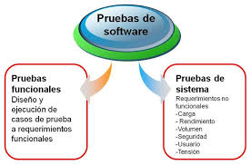

Tipos de pruebas de software

Son un conjunto de actividades de pruebas que suelen orientase a comprobar determinados aspectos de un sistema software (o de una parte del mismo).
En primer lugar tenemos las Pruebas Software Funcionales. Típicamente encontraremos el comportamiento del sistema, subsistema o componente software descrito en especificaciones de requisitos o casos de uso, aunque también puede no estar documentado (“que funcione como el sistema al que sustituye”), Es decir, con las funciones establecemos “lo que el sistema hace”.
Estas pruebas se definen a partir de funciones o características (como decimos, bien descritas en documentos o bien interpretadas por los probadores) y su interoperabilidad con sistemas específicos, pudiendo ejecutarse en todos los niveles de pruebas (componentes, integración, sistema, etc).
Se consideran Pruebas de Caja Negra (“black-box testing”) puesto que valoramos el comportamiento externo del sistema. Las Pruebas de Seguridad o las Pruebas de Interoperabilidad entre sistemas o componentes son casos especializados de las pruebas funcionales.
En segundo lugar figuran las Pruebas Software no Funcionales que incluyen las pruebas de: Rendimiento, Carga, Estrés, Usabilidad, Mantenibilidad, Fiabilidad o Portabilidad, entre otras. Por tanto se centran en características del software que establecen “cómo trabaja el sistema“.
Estas pruebas también pueden ejecutarse en todos los niveles de pruebas. Las características no funcionales del software se pueden medir de diversas maneras, por ejemplo, por medio de tiempos de respuesta en el caso de pruebas de rendimiento o por número máximo de sesiones en pruebas de estrés.
Puesto que las Pruebas software no Funcionales normalmente consideran el comportamiento externo del sistema, en la mayoría de los casos se utilizan técnicas de Pruebas de Caja Negra.
A continuación, en tercer lugar, tenemos las Pruebas Software Estructurales. Nuevamente pueden ejecutarse en todos los niveles de pruebas (ya sabéis: componentes, integración, sistema, etc.) y encajan muy bien si hemos utilizado técnicas de especificación de la estructura o arquitectura del Software. Es posible aplicar técnicas estáticas de análisis de código.
Para expresar el alcance con un conjunto de pruebas (“test suite”) que ha cubierto la estructura o arquitectura en cuestión, se utiliza el concepto de Cobertura (“Coverage”), normalmente en forma de porcentaje.
Es especialmente habitual utilizar herramientas de apoyo para calcular la cobertura del código en el caso de Pruebas de Componentes o en Pruebas de Integración de Componentes (por ejemplo, trazando la jerarquía de llamadas entre elementos). Puesto que indagamos en el comportamiento interno, estas pruebas se denominan también Pruebas de Caja Blanca (“white-box testing”).
Finalmente, el cuarto tipo de pruebas son las Pruebas Derivadas de la realización de cambios: las Pruebas Software de Regresión y las Re-pruebas.
Una vez que un defecto ha sido corregido, toca volver a probar el software para confirmar que el defecto ha sido eliminado. Son pruebas repetidas o Re-Pruebas.
Las Pruebas de Regresión consisten en volver a probar un componente, tras haber sido modificado, para descubrir cualquier defecto introducido, o no cubierto previamente, como consecuencia de los cambios. Los defectos pueden encontrarse tanto en el software que se ha cambiado como en algún otro componente. Se ejecutan cuando se cambia el software o su entorno. El criterio para decidir la extensión de estas Pruebas de Regresión está basado en el riesgo de no encontrar defectos en el software que anteriormente estaba funcionando correctamente.
Las Pruebas de Regresión se realizan sobre un componente ya probado, para verificar que no presenta nuevos defectos cuando se realiza una modificación después de dichas pruebas.
Este tipo de pruebas software deben ser repetibles si han de usarse para pruebas de confirmación (o aseguramiento) y regresión (como Sondas de Disponibilidad, por ejemplo). Los conjuntos de pruebas de regresión (“Regression test suites“) suelen ser bastante estables por lo que son muy buenos candidatos para actividades de automatización de pruebas software.
En el siguiente video explicativo se analizaran los diferentes tipos de pruebas de software que existen, como pruebas de caja Negra – Pruebas no funcionales – pruebas estructurales y las pruebas de regresión.
Ver Video